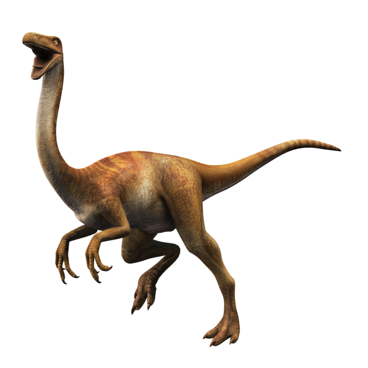

Pflanzenfresser
Glaubt man dem Geologieprofessor Brian McNeal von der University of Florida, dann wurden pflanzenfressende Dinosaurierer nur so groß, weil sie faul waren und es Nahrung im Überfluss gab. Die Couch-Potato-Hypothese besagt, dass Dinos so eine ungeheure Größe nur erreichen konnten, weil sie keine weiten Strecken zur Nahrungssuche zurücklegen mussten.
| Name | Bild | Link |
|---|---|---|
| Barosaurus | hier | |
| Ceratopsia | hier | |
| Diplodocus | hier |
Fleischfresser

Der größte durch fast vollständige Skelettfunde bekannte Fleischfresser ist der etwa 12 Meter lange Tyrannosaurus rex, jedoch gibt es hier ebenso Skelettfragmente, die auf noch größere Gattungen schließen lassen. Der größte bekannte war vielleicht der Spinosaurus mit einer Länge von 16 bis 18 Metern und einem Gewicht von acht Tonnen.
| Name | Bild | Link |
|---|---|---|
| Allosaurus | hier | |
| Carnotaurus | hier | |
| Deinonychus |

|
hier |
Allesfresser
Eine Besonderheit der allesfressenden Dinosaurier ist, daß sie alles essen konnten, aber innerhalb bestimmter Grenzen. Sie konnten morgens keine Blätter essen und sich zusammenschließen, um am Nachmittag eine große Beute zu jagen und dann am Ufer einer Lagune zu fischen, so etwas passierte nicht.
| Name | Bild | Link |
|---|---|---|
| Abrictosaurus | hier | |
| Ajacingenie | hier | |
| Gallimimus |  | hier |